Conceptos¶
Antes de empezar a utilizar los servicios de OpenStackLDV es necesario conocer su terminología y algunos conceptos importantes.
Imágenes¶
- El componente de OpenStack que se gestiona las imágenes es Glance.
- Una imagen es un sistema preconfigurado que se utiliza como base para crear instancias (máquinas virtuales).
- Cada imagen es un fichero que contiene la estructura y contenidos completos de un dispositivo de almacenamiento (HDD, CD, DVD, etc.).
- OpenStack soporta:
- Múltiples formatos de imagen:
- qcow2: Soportado por QEMU/KVM con múltiples opciones (snapshots, cifrado, compresión, expansión dinámica, ...) Es el formato que usaremos principalmente en OpenStackLDV.
- raw: Formato de imagen de disco en crudo, desestructurado. No optimizado para virtualización pero muy portable.
- iso: Un formato de ficheros para datos contenidos en un disco óptico, como por ejemplo un CD-ROM.
- vmdk : Formato soportado por muchos hipervisores, principalmete VMware.
- ak : Imagen con kernel de Amazon EC2.
- ari: Imagen de disco en RAM de Amazon EC2.
- vdi: Formato de imagen soportado por VirtualBox.
- ...
- Contenedores de imagen:
- OVF: estándar abierto.
- AMI: Una imagen de máquina Amazon, que precisa de una imagen aki y habitualmente de otra ari para poder arrancar.
- Las imágenes son archivos de solo lectura.
- Múltiples formatos de imagen:
- Cloud-images
- Una cloud-image es una imagen preconstruida por una distribución/SO.
- Son discos arrancables, con el sistema operativo ya instalado y con datos específicos eliminados (“anonimizada”).
- Las principales “distros” libres las proporcionan (OpenStack Get Images).
- El proyecto CirrOS nos ofrece imágenes de testing (¡no aptas para producción!).
- Es posible crear nuestras propias cloud-images instalando nuestro sistema operativo y haciendo una serie de configuraciones.

Lo habitual en un IaaS es que existan un conjunto de imágenes genéricas (cloud-images) y públicas (accesibles por todos los usuarios) para poder crear instancias. Además, cada usuario podrá crear y subir sus propias imágenes en función de los permisos y cuotas que se le hayan otorgado.
Sabores (o tipos de instancias)¶
- Un sabor ( o tipo de instancia) es una plantilla que permite definir para una instancia una seríe de características hardware: el número de CPUs virtuales (VCPUs), la memoria RAM y si dispone o no de discos efímeros y su tamaño.
- En OpenStackLDV existen varios sabores predeterminados.
- Es responsabilidad del administrador gestionar los sabores.
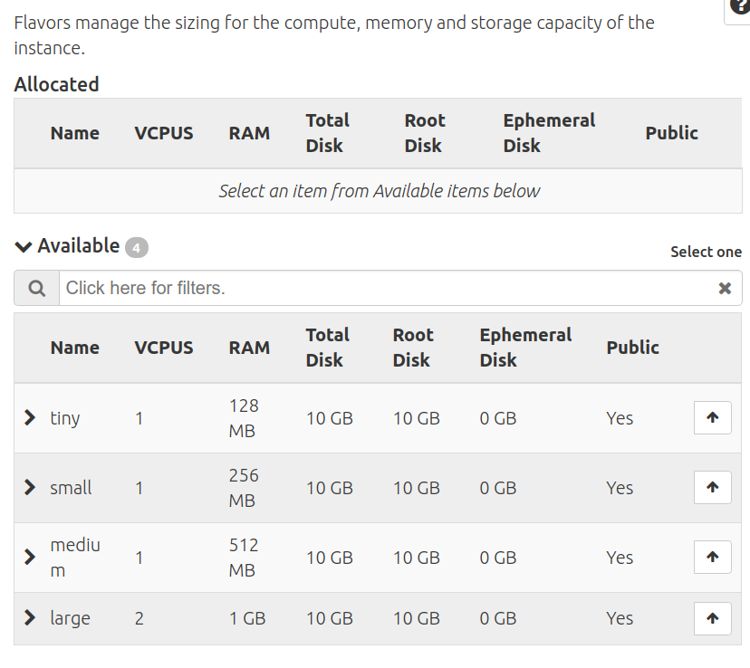
Instancias¶
- El componente de OpenStack que gestiona la instancias es Nova.
- Una instancia es una máquina virtual aprovisionada por OpenStack.
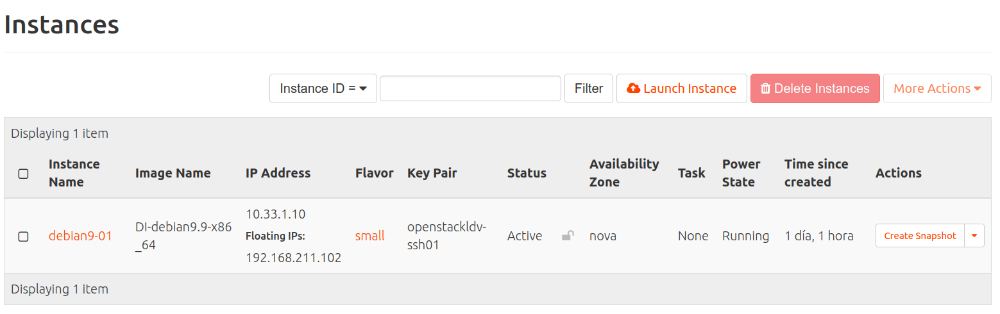
- Se crea (lanza) a partir de una imagen y en base a un sabor.
- Es capaz de configurarse dinámicamente en tiempo de instanciación gracias a un servicio del cloud denominado servidor de metadatos que "inyecta" o envía parámetros (nombre, IPs, claves SSH, scripts, ...) a las instancia.
- Cada instancia se ejecuta en uno de los nodos de computación del cloud.
- Se puede conectar a una o varias redes.
Redes y dispositivos de red¶
El componente de OpenStack que gestiona las redes y los dispositivos de red es Neutron.
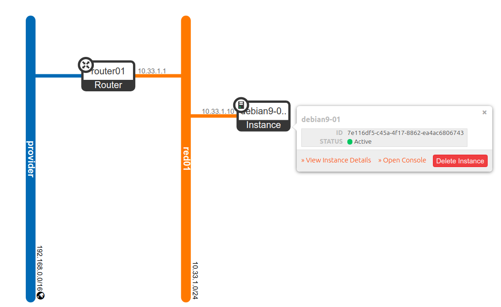
Redes¶
- OpenStack permite crear permite crear redes virtuales.
- A esa redes se pueden conectar instancias y routers.
- Una red es un dominio de capa 2 (equivalente a una VLAN en redes físicas).
- Cada red esta "reservada" y es privada al proyecto en el que se crea.
- En OpenStackLDV existe una red especial (externa) creada que se denomina provider, que es equivalente a la red del instituto. No es posible conectar directamente instancias a la red provider.
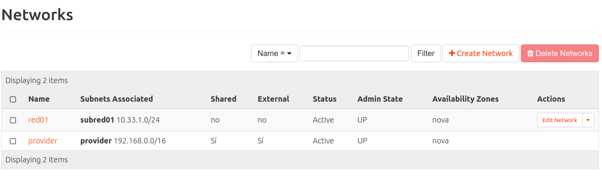
Subredes¶
- Una subred es un bloque de direcciones IPv4 o IPv6 que se asignan a las instancias que se conectan a ella.
- Cada subred debe estar asociada a una red.
- OpenStack permite crear un servidor DHCP para otorgar la configuración de red a las instancias de forma dinámica.
- Múltiples subredes no contiguas pueden asociarse a una única red.
Routers¶
- Dispositivos virtuales que permiten enrutar entre redes.
- Disponen de interfaces conectados a redes a los que se les pueden asignar IPs.
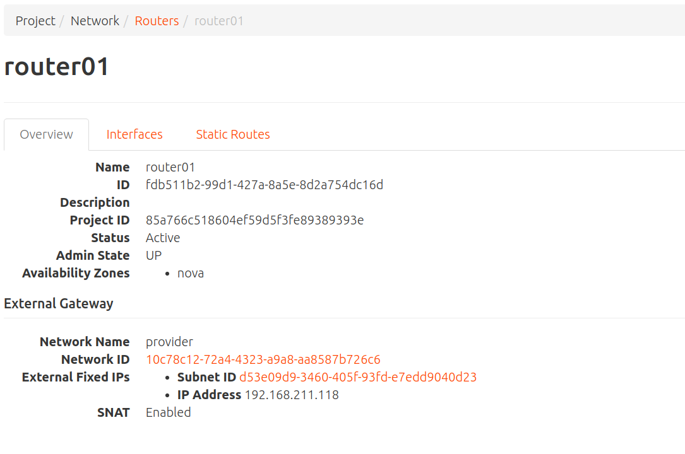
Puertos¶
- Puerto virtual de un "switch virtual" que conecta a todos los dispositivos conectados a una red. Un punto de conexión para mapear la NIC de una instancia/interfaz de un router a una red virtual. Incluye la configuración de red asociada, como la MAC y la IP.
- Existe puertos a los que se conectan routers, instancias y servidores DHCP.
IP Fija¶
- Dirección IP asignada a un interfaz de una instancia/router y que se utiliza para comunicación interna.
- La dirección IP fija no cambia durante la vida de la instancia.
IP Flotante¶
- Dirección IP asociada a una instancia en un momento dado para poder acceder a ella desde el exterior.
- En OpenStackLDV el rango de IPs flotates es una rango de direcciones IPv4 de la red IP del instituto (la red provider).
- Una IP flotante puede desasignarse y asignarse a otra instancia diferente cuando se considere.
- Se asigna de forma dinámica a una instancia por DHCP.
- Una instancia ignora por completo que tiene dicha dirección.
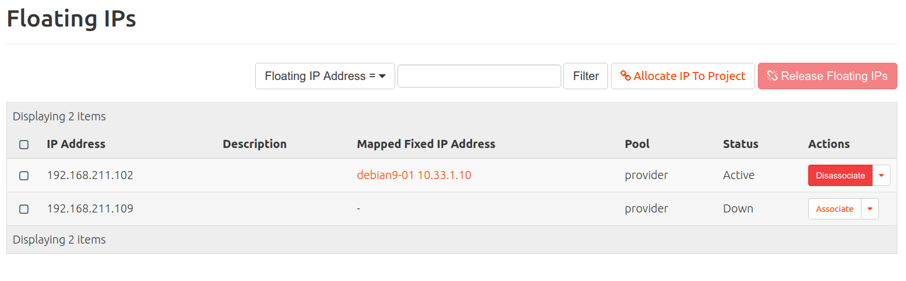
Grupo de seguridad¶
- Reglas de cortafuegos que controlan el acceso a las instancias.
- Los grupos de seguridad permiten aplicar reglas de firewall por instancia (las reglas se aplican a nivel de interfaz de red).
- Soportan reglas de tráfico ingress y egress.
- Se puede cambiar de grupo de seguridad en vivo (con la instancia ejecutándose).
- Toda instancia debe pertenecer al menos a un grupo de seguridad y puede pertenecer a varios.
- En cada proyecto hay creado un grupo de seguridad por defecto (default) que permite intercomunicar a las instancias del proyecto .Por defecto permite todo el tráfico de salida y acepta tráfico ingress del grupo, pero rechaza todo el tráfico exterior que no proceda del grupo de seguridad default.
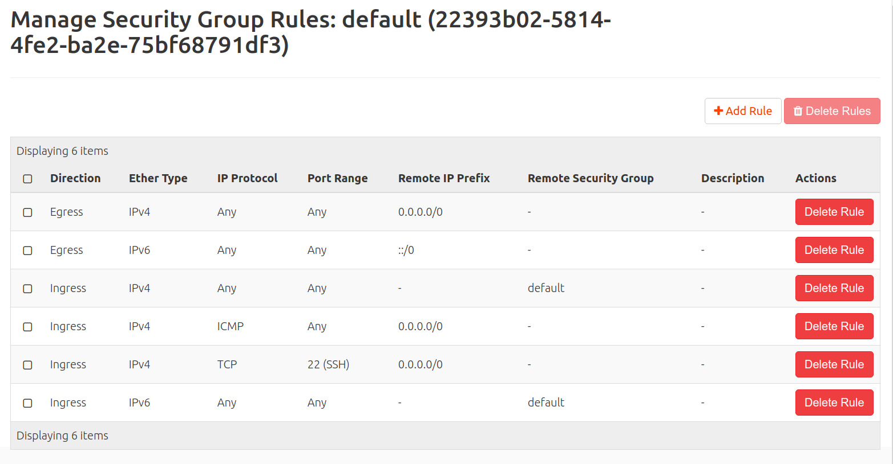
Claves SSH¶
- Es habitual que las imágenes este preparadas para que a las instancias que se crean a partir de ellas solo de pueda acceder por SSH usando auntenticación por clave pública (la usuarios creados no tienen contraseña y el acceso usuario/clave está deshabilitado en el servidor SSH).
- Los usuarios pueden:
- Crear pares de claves pública/privada en el cloud de forma que el usuario se descargará la clave privada en el equipo en el que usará el cliente SSH.
- Subir la clave pública, asociada con una clave privada que haya creado previamente en su equipo, al cloud. Esta opción es más segura.
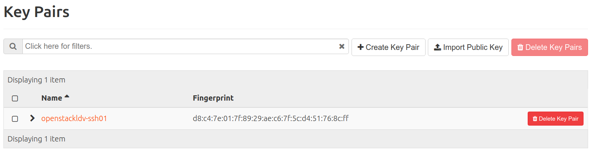
- En el momento de crear la instancia se puede indicar que clave/s pública/s se "inyectarán" en la instancia.
- Hay imágenes donde si esta habilitado el acceso usando usuario y contraseña (por ejemplo en Cirros).
Acciones sobre instancias¶
Una vez creadas es posible realizar diferentes operaciones o acciones sobre una instancia.
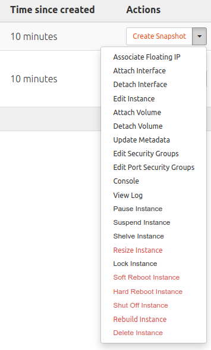
Acciones sobre a la información de la instancia¶
- Editar instancia: Permite cambiar el nombre de la instancia.
- View log: Permite acceder al log de inicio de la instancia.
- Console: Permite acceder a una consola VNC para administrar la instancia.
- Update metadatos: Permite modificar los metadatos de la instancia.
Acciones sobre la configuración de red¶
- Assocate Floating IP: Permite asociar a la instancia una IP flotante reservada en el proyecto. Consulta el apartado sobre Redes y dispositivos de red.
- Attach Interface: Permite añadir un nuevo interfaz (tarjeta) de red y conectarla a una red (internamente se crea un nuevo puerto). Consulta el apartado sobre Redes y dispositivos de red.
- Deattach Interface: Permite quitar un interfaz (tarjeta) de red y desconectarla por lo tanto de la red correspondiente. Consulta el apartado sobre Redes y dispositivos de red.
Acciones sobre el ciclo de vida de la instancia¶
- Pause Instance: Para la ejecución de la instancia guardando su estado en memoria RAM.
- Suspended Instance: Para la ejecución de la instancia guardando su estado en memoria disco.
- Resume Instance: Reaunda una instancia suspendida o pausada.
- Shut Off Instance: Apaga una instancia.
- Start Instance: Inicia una instancia apagada.
- Soft Reboot: envía una señal de reinicio al sistema operativo de la instancia.
- Hard Reboot: fuerza el reinicio de la instancia. Solo deberíamos hacerlo si tenemos algún problema con ella.
- Lock Instance: Bloquea la instancia par que no se pueda modificar su configuración.
- Unlock Instance: Desbloquea la instancia par que no se pueda modificar su configuración.
- Delete Instance: Borra la instancia y libera todos los recursos que usaba.
Acciones sobre el almacenamiento de la instancia¶
- Attach Volume: Permite conectar a la instancia un volumen previamente creado. Consulta el apartado sobre Almacenamiento.
- Deattach Volume: Permite desconectar de un volumen de la instancia. Consulta el apartado sobre Almacenamiento..
- Create Snapshot: Permite crear una nueva snapshot. Consulta el apartado sobre Snapshots de instancias
Acciones sobre la configuración de la seguridad de la instancia¶
- Edit Security Groups: Permite añadir o quitar grupos de seguridad. Consulta el apartado sobre Redes y dispositivos de red..
- Edit Port Security Groups: Permite configurar la seguridad de un determinado puerto. Permite desactivar el cortafuegos de la instancia en esa interfaz de red desactivando la opción Seguridad del puerto. Consulta el apartado sobre Redes y dispositivos de red..
Redimensionar una instancia¶
- Resize Instance: Permite cambiar el sabor de la instancia y por lo tanto sus recursos de CPU, RAM y disco. Se realiza en dos pasos, en primer lugar verifica si es posible llevarlo a cabo, y si es posible la instancia pasa al estado VERIFY_RESIZE y se le pregunta al si Confirmar la redimensión o Revertir la redimensión.
Reconstruir una instancia¶
- Rebuild Instace: Permite reconstruir de nuevo la instancia usando otra imagen pero manteniendo la misma IP y metadatos..
Archivar una instancia¶
- Shelve Instance: Archivar una instancia permite detener una instancia y liberar en el cloud los recursos de computación asociados ( vCPUs, RAM, disco) sin tener que eliminarla. Internamente se crea una instantánea (snapshot) de la instancia. La instancia en ejecución se elimina del nodo de computación, pero sus detalles del tiempo de ejecución, vCPUs, RAM tamaño del disco y direcciones IP, se conservan. Sobre una instancia archivada podemos eliminarla o recuperarla.
- Unshelve Instance: Permite recuperar una instancia Archivada.
Snapshots de instancias¶
- Una snapshot es una instantanea de una instancia.
- Cuando se crea una snapshot de una instancia se crea una nueva imagen con el estado actual de la instancia.
- A partir de esta nueva imagen se pueden crear nuevas instancias. Esto es muy útil para distribuir imágenes con una configuración específica.
Almacenamiento¶
OpenStack permite gestionar varios tipos de almacenamiento que podemos clasificar en:
-
Almacenamiento efímero
- Este almacenamiento está asociado al ciclo de vida de vida de una instancia. Cuando se destruye la instancia se borra el almacenamiento.
- Lo ideal es crear siempre las instancias con almacenamiento efímero.
- Terminar (destruir) una instancia es el borrado definitivo de la instancia !!! Miedo razonable a perder una instancia ¡¡¡ Cambio de mentalidad, lo que meta en la instancia debe ser efímero. Lo “importante” debe estar en el Almacenamiento persistente (Volúmenes).
-
Almacenamiento persistente
- Almacenamiento independiente de la vida de las instancias.
- Existen diferentes tipos de almacenamiento persistente soportados por diferentes componentes de OpenStack.
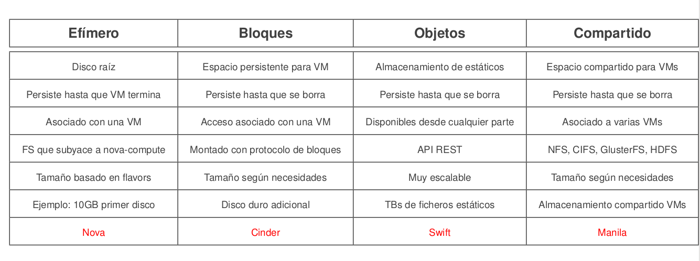 Fuente: https://flossystems.com/
- En OpenStackLDV está se dispone del almacenamiento de bloques basado en volúmenes gestionado por el componente Cinder.
Volúmenes¶
- Un vólumen es un dispositivo de bloques que se puede asociar/desasociar de una instancia en cualquier momento.
- Utilizado para proporcionar almacenamiento persistente e independiente de la vida de una instancia.
- Pueden usarse también para arrancar instancias desde ellos.
- Un volumen solo puede estar asociado a una instancia simultáneamente.
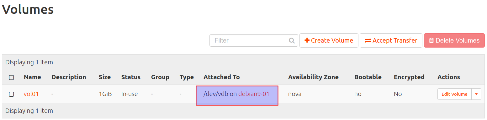
- En un IaaS no tiene utilidad y es obsoleto hacer particiones. Si necesito creo más volúmenes.
- Es importante asegurarse de formatear los volúmenes con sistemas de ficheros que admitan redimensión/reformateo en caliente.
Snapshots de volúmenes¶
- Una snapshot es una copia instantánea de solo-lectura de un volumen en un momento determinado.
- Pueden usarse para crear nuevos volúmenes.
- Hay que tener cuidado con las snapshots de volúmenes en caliente.
- Las snapshots son dependientes del origen. Para borrar un volumen hay que borrar primero los snapshots
- Al crear un volumen a partir de snapshot de volumen lo independizamos el volumen del que inicia.
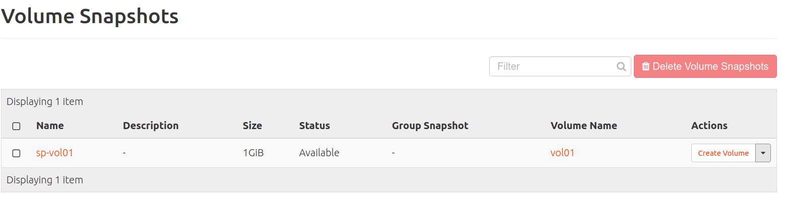
Servidor de metadatos y Cloud init¶
-
Recuerda que:
- Una instancia es una máquina virtual aprovisionada por OpenStack que se crea (lanza) a partir de una imagen y en base a un sabor (plantilla con el tamaño - vCPUs, RAM y almacenamiento efímero-).
- Una imagen es un sistema preconfigurado que se utiliza como base para crear instancias (máquinas virtuales).
-
Las imagenes por lo tanto no tienen ninguna configuración específica y es necesario establecer una serie de configuraciones/parámetros en el momento de crear la instancia (nombre de la máquina,, usuarios, autenticación y claves ssh, ...).
- Opestack permite configurar las instancias dinámicamente en tiempo de instanciación gracias a un que ofrece un servicio del cloud denominado servidor de metadatos que "inyecta" o envía parámetros (nombre, IPs, claves SSH, scripts, ...) a las instancia.
Servidor de metadatos¶
- Opestack (a través del compomete nova) ofrece usa un servicio especial de metadatos, que es accesible desde toda las instancia a través de la url http://169.254.169.254/openstack.
- A partir de esa URL devuelve los metadatos al cliente que los solicita en formato json.
- Permite a las instancia inyectarse datos dinámicos sobre sí misma para configurarse al arrancar por vez primera.
- Soporta API de Amazon EC2, lo que permite instanciar en OpenStack imágenes preparadas para Amazon.
- Ejemplos de consultas al servidor de metadatos desde una instancia.
curl -w"\n" 169.254.169.254
curl -w"\n" 169.254.169.254/latest/
curl -w"\n" 169.254.169.254/latest/meta-data
curl -w"\n" 169.254.169.254/latest/meta-data/hostname
curl -w"\n" 169.254.169.254/latest/meta-data/instance-type
curl -w"\n" 169.254.169.254/latest/meta-data/local-ipv4
curl -w"\n" 169.254.169.254/latest/meta-data/public-ipv4
Cloud-init¶
-
Cloud-init (https://cloud-init.io/) es un software que permite consultar paramétros a un proveedor cloud o de virtualización para inicializar las instancias o máquinas virtuales duante su instanciación o arranque.
-
Fue desarrollado inicialmente por Canonical para las imágenes cloud de Ubuntu usadas por AWS. Desde entonces, la aplicación ha evolucionado y puede ser usada en otras muchas distribuciones y en otros entornos cloud (y no cloud). Se ha convertido en el estandar y es soportado por múltiples sistemas operativos y proveedores de cloud y sistemas de virtualización.
-
Durante el arranque, cloud-init identifica la nube/sistema en la que se está ejecutando e inicializa el sistema en consecuencia. Las instancias se aprovisionarán automáticamente durante el primer arranque con redes, almacenamiento, claves SSH, paquetes y varios otros aspectos del sistema ya configurados.
-
Las imágenes de Openstack (cloud images) tienen instalado y configurado el paquete cloud-init para inicializar las instancias. Puede consultar los datos desde diferentes fuentes (servidor de metadatos, user-data, ...) según la configuracion de cloud-init.
-
Habitualmente cuendo se inicia o reinicia una instancia en Openstack cloud-init consulta el servidor de metadatos y:
-
Configura el hostname de la instancia.
- Obtiene la información de la configuración de red. Si no existe, se hace una petición DHCP.
- Genera par de claves SSH para la instancia.
- Inyecta clave pública SSH en /.ssh/authorized_keys del usuario por defecto de la instancia
- Configura locales por defecto.
- Se redimensiona la partición raíz y los puntos de montaje del almacenamiento efímero de la instancia,
- Consulta el user-data inyectado por el usuario del cloud en tiempo de instanciación.
-
Documentación de cloud-init: https://cloudinit.readthedocs.io/en/latest/
-
user-data
- Es un conjunto de datos/instrucciones que el usuario le puede indicar al cloud en el momento de crear o iniciar la instancia para que cloud-init los procese.
- Soporta varios tipos de formato: https://cloudinit.readthedocs.io/en/latest/explanation/format.html#user-data-formats. - En nuestras actividades vamos usar scripts y cloud-config.
- scripts: en .sh, .bash, ....
- cloud-config: fichero en formato YAML con una serie de directivas que permiten indicar acciones y datos.
-
Ejemplos de cloud-config
Modificar el username del usuario por defecto
#cloud-config
system_info:
default_user:
name: alumno
Cambiar contraseña
#cloud-config
chpasswd:
list: |
alumno:alumno
expire: False
Actualizar paquetes
#cloud-config
package_update: true
package_upgrade: true
package_reboot_if_required: false
Instalar paquetes
#cloud-config
packages:
- traceroute
- apache2
Escritura ficheros
#cloud-config
write_files:
- path: /var/www/html/index.html
permissions: '0644'
owner: www-data:www-data
content: |
Mi web
runcmd: Solo en el primer arranque
#cloud-config
runcmd:
- rm -rf /var/www/html/
- git clone https://github.com/asir/web-test.git /var/www/html/
- chown -R www-data:www-data /var/www/html/
bootcmd: En cada arranque
#cloud-config
bootcmd:
- rm -rf /var/www/html/
- git clone https://github.com/asir/web-test.git /var/www/html/
- chown -R www-data:www-data /var/www/html/
- En OpenStackLDV es posible introducir el user-data en el momento de crear la instancia en la pestaña Configuration.
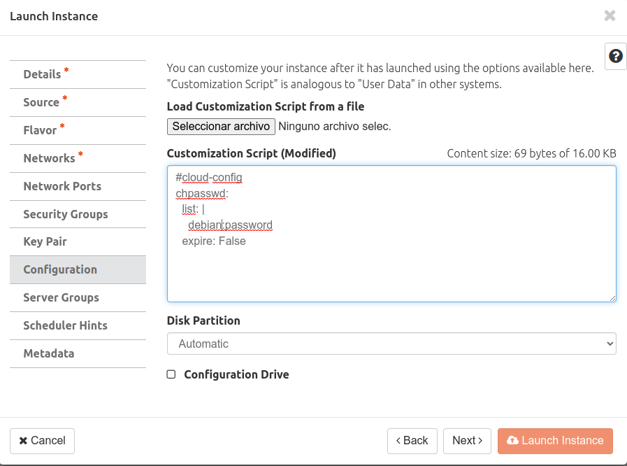